Visuals for Fundamentals for Designing Engaging PvE Interactions: hazard movement patterns, enemy counters, compositional enemy design, resistance and escalation.
Grouped by the part of the deck each one comes from, in deck order. Open one and use ← → to move through it.
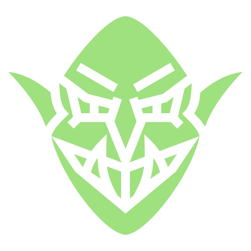
Enemy ComposerEvery Mario enemy as one card of movement, stomp and fireball: the twelve cards, a composer that spots reskins and new enemies, the 48-card design space, and same card, different feel (deck slides 42 and 45). GIFs: gifs/enemy-composer.gif, gifs/same-card-different-feel.gif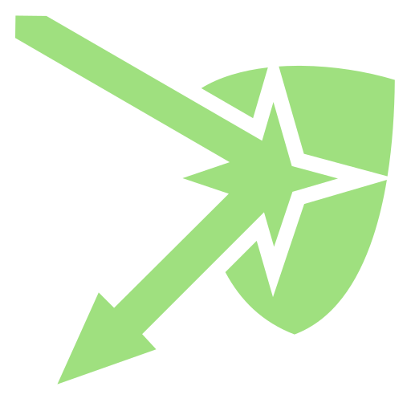
ResistanceOne corridor and five kinds of resistance (shoot it, avoid it, get behind it, take cover, switch targets), with a strength slider that shows when resistance is too weak to matter (deck slides 74 to 84). GIF: gifs/resistance-strong-enough.gif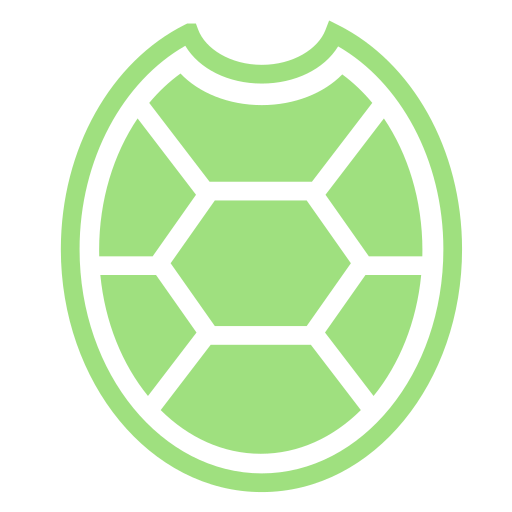
Enemy CountersMario’s jump and fireball against a Koopa, a Spiny and a Buzzy Beetle: every matchup, one level to the flagpole, and a rules matrix to edit (deck slide 76, Start, Opposition, Goal). GIF: gifs/enemy-counters-mario.gif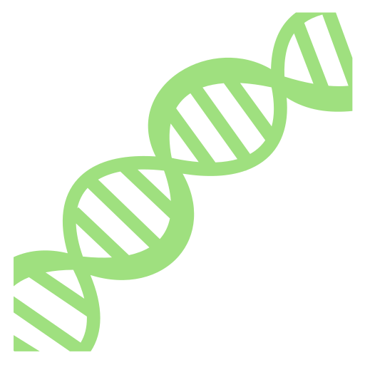
MutatorsStarCraft II co-op mutators on one Zerg wave: the base-mission habit against what each mutator asks for, then a weekly mutation of three that stack, fight each other or break (Procedural Permutation slide). GIFs: gifs/sc2-mutators-same-wave-new-answer.gif, gifs/sc2-weekly-mutation-mix.gif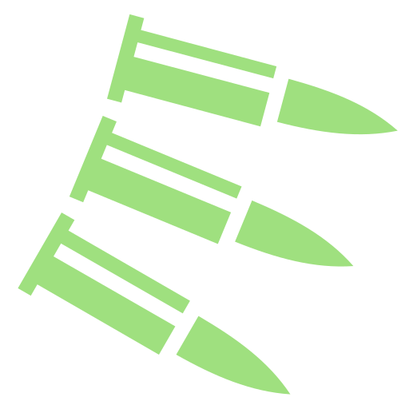
Gungeon Enemy VariantsEnter the Gungeon’s nineteen Gundead from the Handcrafted Permutation: Enemy Variants slide, each played against the Pilot with its card; a numbers-or-new-response sort; and the rules that travel across bases. GIF: gifs/gungeon-enemy-variants.gif1280×720, looping, one per deck slide. Right-click a GIF to save it, or open it full size.
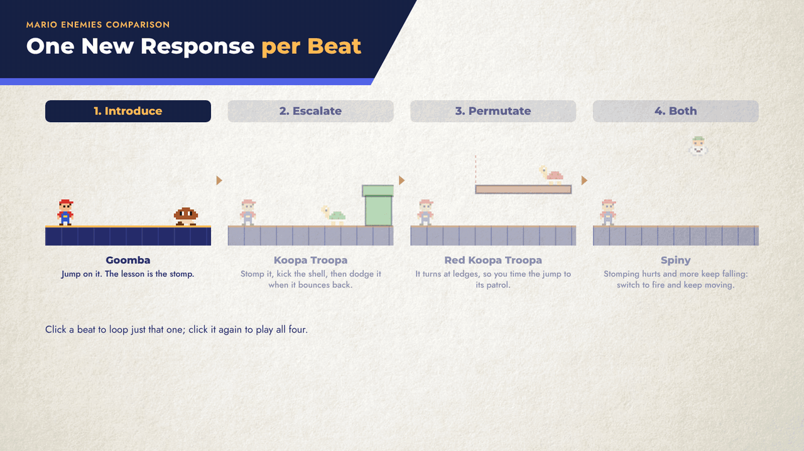
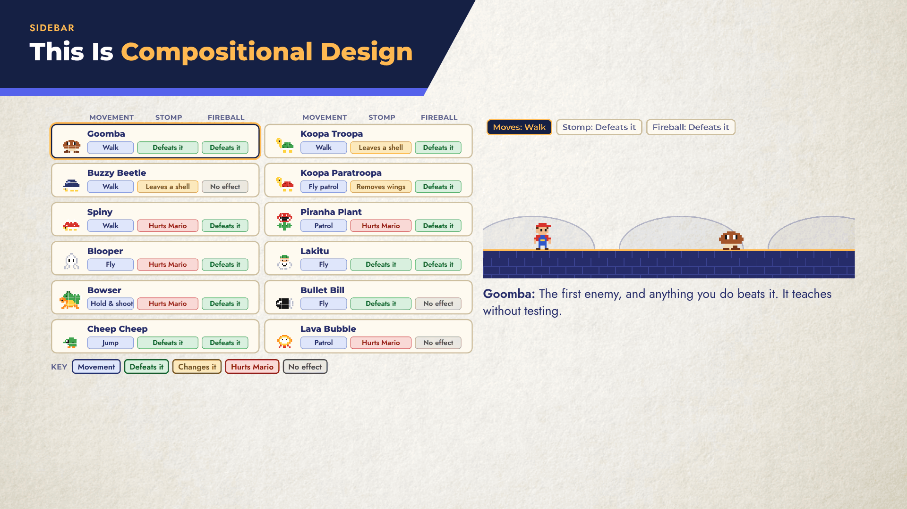
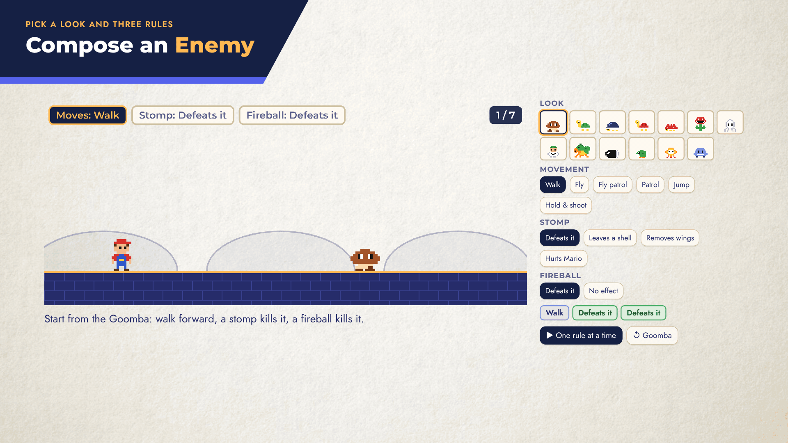
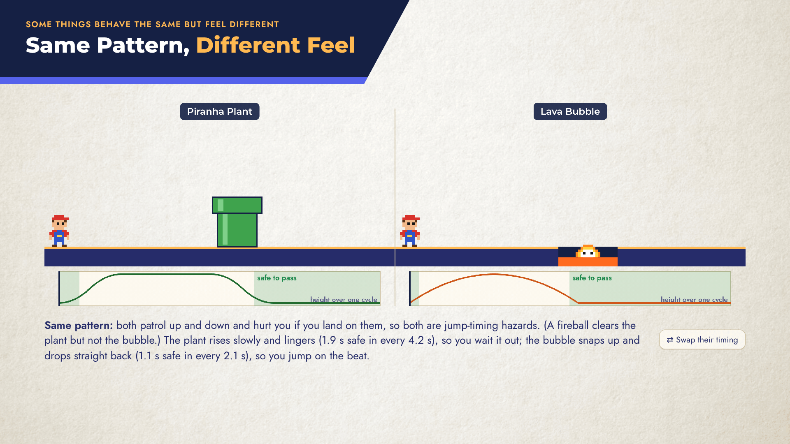
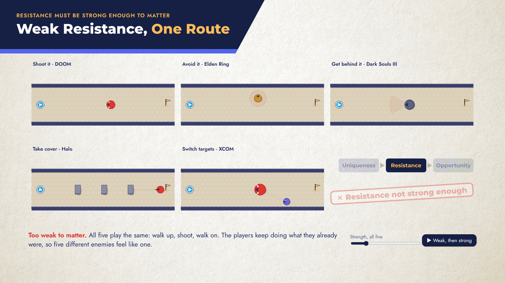
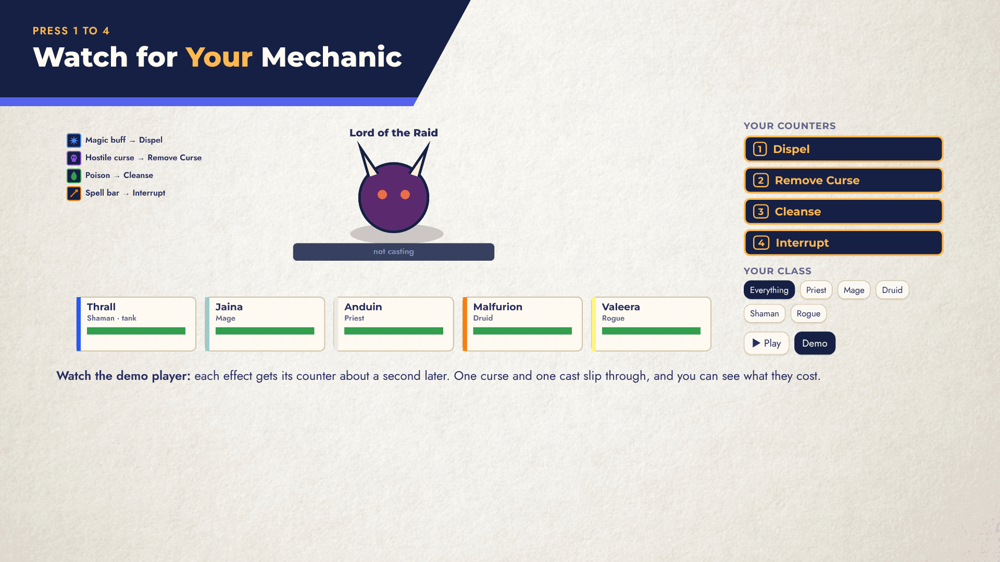
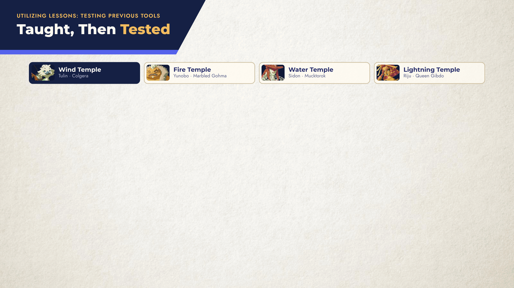
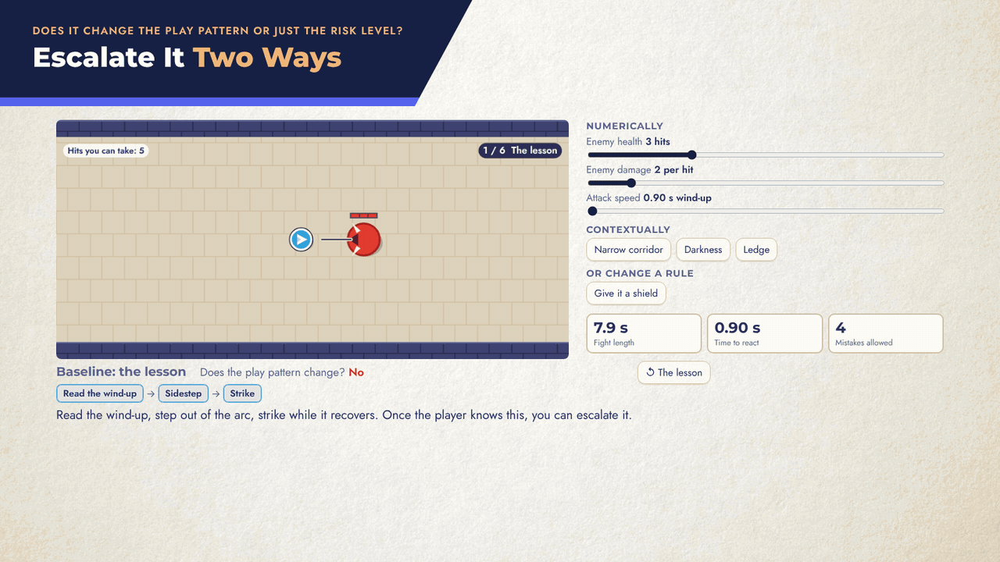
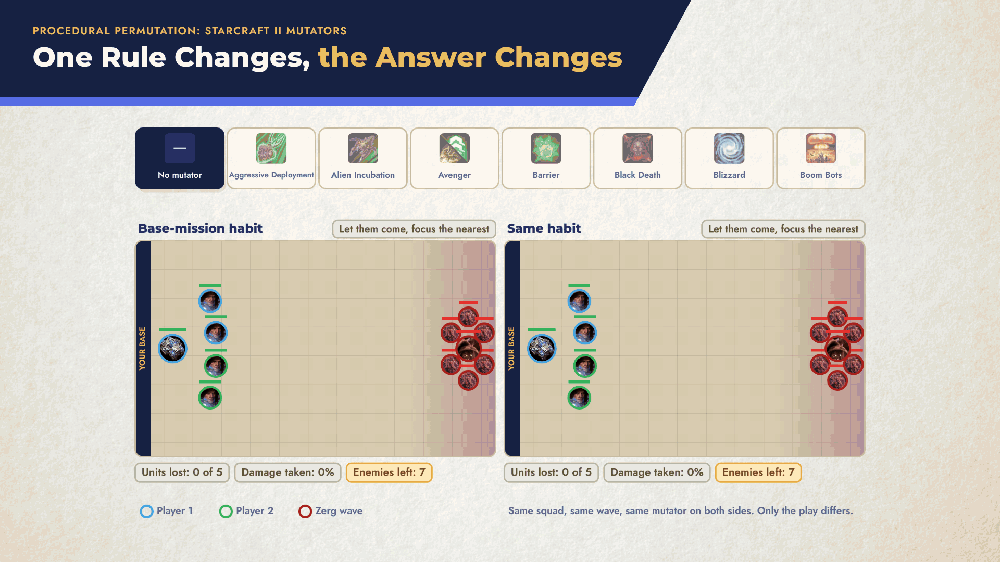
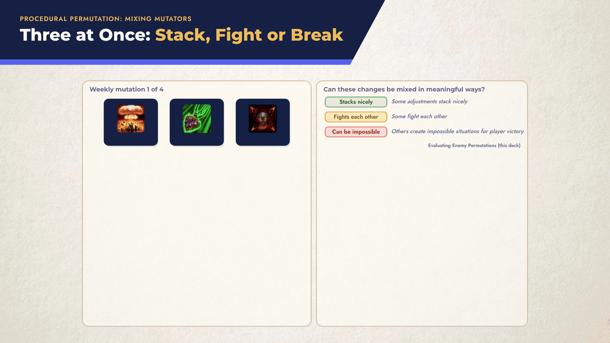
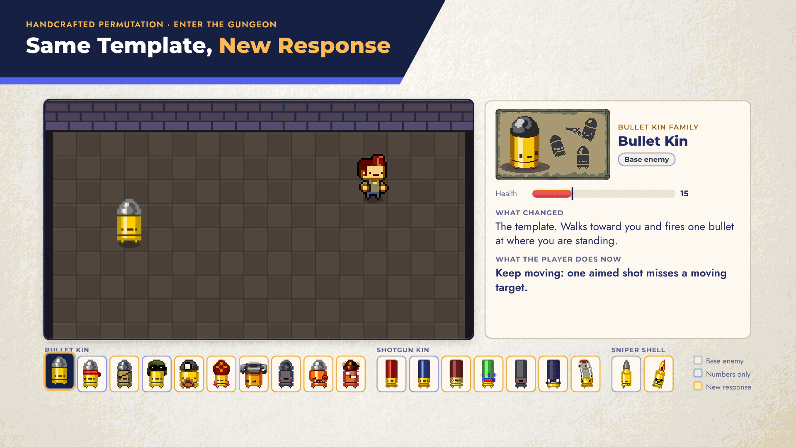